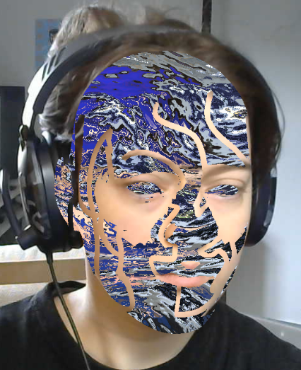
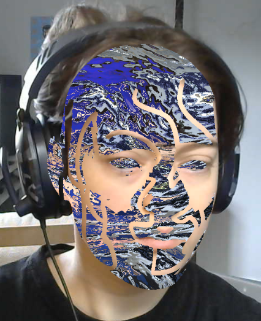

AR filters developed within Snapchat's Lens Studio.
I work with a variety of tools within Lens Studio to create various different AR experiences. These images are mainly me messing with camera shaders, which has been proving really interesting, however I have made a lots of more traditional Snapchat filters which can be found on my account below. These filters collectively have around 5 million views on Snapchat.
Please contact me for any enquiries in regards to my freelance lens work, I'd be happy to talk about it!
my lenses can be found here!


 
